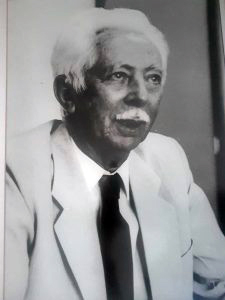
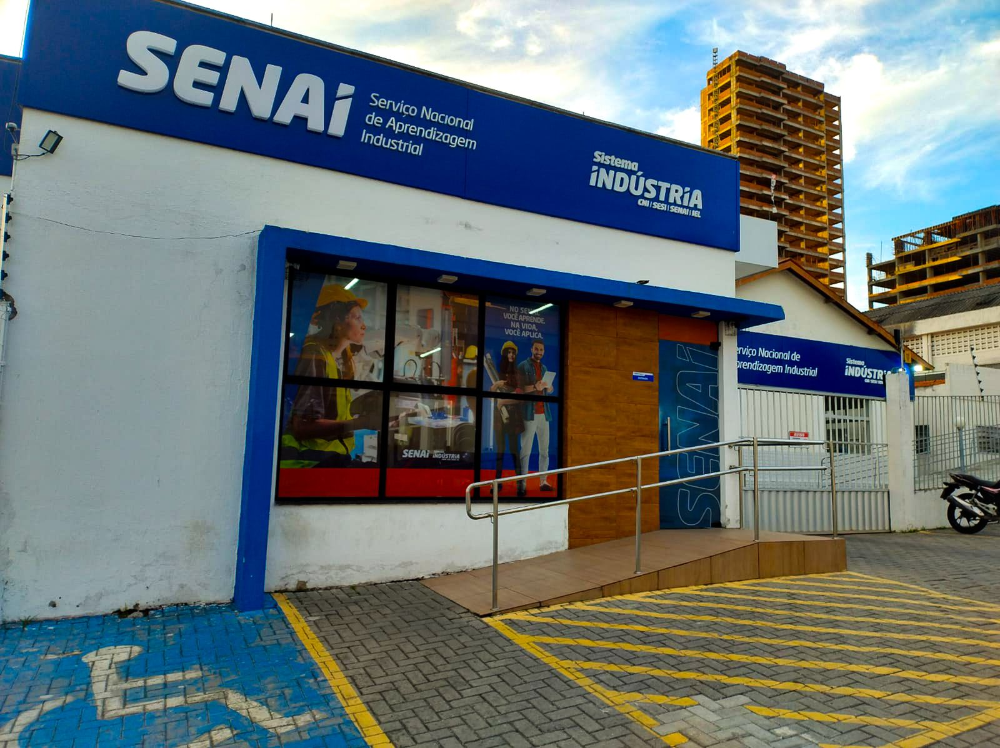

Missão
Promover educação profissional e tecnológica de qualidade, preparando pessoas para o trabalho, a inovação e o desenvolvimento da indústria.
O SENAI Stênio Lopes combina formação profissional, tecnologia e uma visão prática para impulsionar novas trajetórias em Campina Grande.
Voltar para Inicial

Memória que inspira novos caminhosO nome Stênio Lopes está ligado à identidade desta unidade e à ideia de que educação profissional se constrói perto das pessoas, da prática e das oportunidades.
Ao visitar o SENAI, cada aluno começa uma história própria. A unidade honra esse legado mantendo o olhar no que vem pela frente: conhecimento aplicado, autonomia e caminhos mais possíveis para o trabalho.
Promover educação profissional e tecnológica de qualidade, preparando pessoas para o trabalho, a inovação e o desenvolvimento da indústria.
Ser referência em formação profissional, reconhecida pela proximidade com a indústria e pelo impacto positivo na comunidade.
Ética, respeito, segurança, inclusão, inovação, colaboração e compromisso com o desenvolvimento sustentável.
